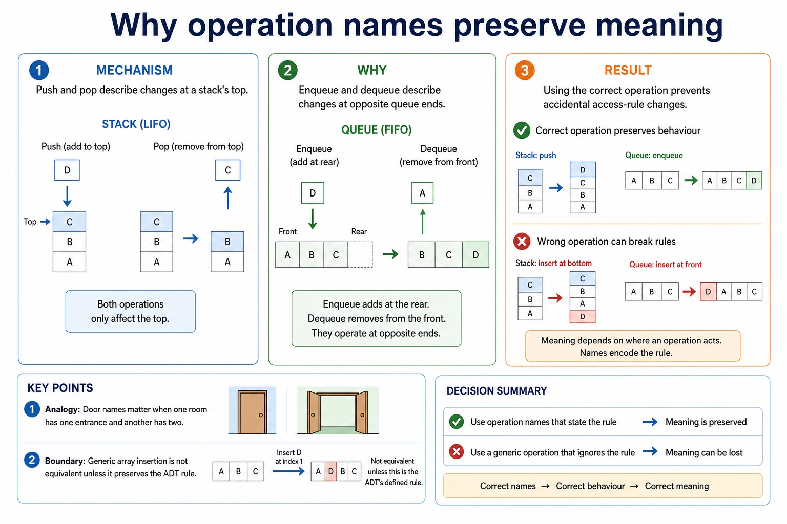

Cambridge AS9618 | Paper 2 | Section 10: Data types and structures
Implementing ADT operations with arrays
Flexible-depth lesson
S10.10 | Learn from the diagrams, test the method, then choose the practice you need.
Choose a Quick, Full or Deep route
Quick route
Use the diagnostic, learning objectives, first worked example and foundation question. Stop once the learner can explain the central distinction accurately.
Full route
Use every knowledge-point material set, the worked method, the terminology check and all questions.
Deep route
Add the prerequisite refresher, ask learners to connect the concept checklist, discuss the labelled extension and complete a transfer question without a model answer.
Part 1 | optional depth
Prerequisite knowledge and quick diagnostic
Recall S10.03, S10.09 before starting this lesson.
Give one accurate definition or method step before continuing. If it is missing, revisit only that prerequisite.
Open optional prerequisite refresher
Use the technical terms associated with arrays, including index, lower bound and upper bound. Bounds define the inclusive valid index range and an index selects one element.
Understand array, index, lower bound and upper bound terminology.
Stack, queue and linked list are examples of ADTs. Describe their key features and justify which structure suits a given situation using LIFO, FIFO or link-based traversal/insertion/deletion evidence.
Understand stack, queue and linked-list features; justify a structure.
Part 2 | knowledge-point material sets
Learn each point through visuals
Follow the map, the three-part explanation and the concrete cue. Open precise wording only after the idea is clear.
Open the concept checklist and choose what to teach
StartCandidates are not required to write pseudocode for these ADT operations, but must be able to add, edit and delete data and describe array implementations
ChangeCandidates must be able to add, edit and delete data conceptually, but the syllabus does not require pseudocode for these ADT operations
CheckAdd, edit and delete data in these ADTs and implement them using arrays
S10.10 diagrams
1 / 5
01
Diagram · 1 of 5
Implement stack, queue and linked list using arrays
Open text transcript
An array stack uses Top; a queue uses Front and Rear; a linked list uses Data, Next, Start and a free list.
Add/delete preserve stack LIFO, queue FIFO and linked-list links; edit changes stored data without corrupting structure.
Candidates are not required to write pseudocode for these ADT operations; understand add, edit, delete and array implementation.
02
Concrete example · 2 of 5
An ADT is data together with permitted operations
Open text transcript
An abstract data type is a collection of data and a set of operations on those data.
Stack, queue and linked list are examples whose permitted operations define their behaviour.
The implementation may use arrays and indexes without changing the ADT's observable rules.
03
Comparison · 3 of 5
Question-supplied functions versus Java methods
Open text transcript
SPLIT and STRINGTOINTEGER are not standard functions in the Cambridge pseudocode guide; this example uses signatures supplied by the question.
FUNCTION SPLIT(Line : STRING, Delimiter : CHAR) RETURNS ARRAY OF STRING; its first returned element is at index 1.
FUNCTION STRINGTOINTEGER(Value : STRING) RETURNS INTEGER.
Java split and parseInt are support examples only and use different syntax and zero-based array indexes.
04
Diagram · 4 of 5
The eight Cambridge pseudocode type names
Open text transcript
Cambridge pseudocode uses INTEGER, REAL, CHAR, STRING, BOOLEAN and DATE for scalar values.
The Version 2 Notes also name ARRAY and FILE among the pseudocode data types.
Select a type from the value's meaning and required operations; numeric-looking identifiers may still require STRING.
05
Analogy / use · 5 of 5
Why operation names preserve meaning

Open text transcript
Push and pop describe changes at a stack's top.
Enqueue and dequeue describe changes at opposite queue ends.
Using the correct operation prevents accidental access-rule changes.
Open precise syllabus wording
Add, edit and delete data in the ADTs and implement them using arrays; pseudocode for operations is not required by the syllabus.
Use stack, queue and linked list to store data; add, edit and delete data while preserving each ADT rule. Describe array implementations for all three. Candidates are not required to write pseudocode for these ADT operations.
Supporting diagram library
1 / 17
01
Diagram · 1 of 17
A text file stores characters, usually processed one line at a time
Open text transcript
Exam clue
Text file
file containing character data
"Scores.txt"
get data from an existing file
FOR READ
store data to a file, often replacing previous contents
FOR WRITE
02
Diagram · 2 of 17
Open, process, close
Open text transcript
File lifecycle
1. Open choose READ, WRITE or APPEND
2. Process READFILE or WRITEFILE using variables
3. Close release the file and finalise changes
A file algorithm without CLOSEFILE is like leaving the exam hall without submitting the answer booklet.
03
Diagram · 3 of 17
Choose the correct file mode
Open text transcript
Interactive mode lab
Scenario
Choose a scenario and a mode.
04
Diagram · 4 of 17
Choose the mode before touching the file
Open text transcript
File modes
Use when
Risk if wrong
existing file contents are needed
cannot write new lines
creating/replacing output contents
old contents may be overwritten
adding new data to the end
05
Diagram · 5 of 17
Why two ends create FIFO
Open text transcript
Enqueue adds a new item at the rear.
Dequeue removes the waiting item at the front.
Earlier arrivals remain ahead of later arrivals.
06
Diagram · 6 of 17
Use EOF so the loop stops at the end of the file
Open text transcript
Read loop
OPENFILE "Scores.txt" FOR READ
WHILE NOT EOF("Scores.txt")
READFILE "Scores.txt", Line
OUTPUT Line
ENDWHILE
CLOSEFILE "Scores.txt"
The file line is read into Line . Only after that can the program output, split or validate it.
07
Diagram · 7 of 17
Step through a WHILE NOT EOF loop
Open text transcript
Open the file for reading before entering the loop.
Check NOT EOF before attempting READFILE.
When more data exists, read and process the next line.
When EOF is true, skip READFILE, leave the loop and close the file.
08
Diagram · 8 of 17
A text line often represents one record
Open text transcript
Text records
In simple exam-style examples, one line may contain fields separated by a comma. The delimiter must be consistent.
Name = Ali
Mark = 72
Name = Bea
Mark = 64
09
Diagram · 9 of 17
Why one open end creates LIFO
Open text transcript
Push adds the new item at the top position.
Only the current top item is available to pop.
The most recently pushed item therefore leaves first.
10
Diagram · 10 of 17
Write creates a new result; append adds to the existing story
Open text transcript
Write and append
Write a new report
OPENFILE "Report.txt" FOR WRITE
WRITEFILE "Report.txt", "Pass count: " & Count
CLOSEFILE "Report.txt"
Append a new score
OPENFILE "Scores.txt" FOR APPEND
WRITEFILE "Scores.txt", "Dina,91"
11
Diagram · 11 of 17
CSV-style means separated fields in a fixed order
Open text transcript
one complete line of data
S001,Ali,72
one item inside the record
Delimiter
character that separates fields
Fixed order
each position has agreed meaning
ID, Name, Mark
12
Diagram · 12 of 17
Design the format before writing code
Open text transcript
CSV format
Position
Field name
Data type after conversion
StudentID
The file stores all fields as text. The program gives each position meaning.
13
Diagram · 13 of 17
Use question-supplied CSV functions exactly
Open text transcript
The question supplies FUNCTION SPLIT(Line : STRING, Delimiter : CHAR) RETURNS ARRAY OF STRING.
The supplied SPLIT result uses indexes starting at 1; for three fields, use Fields[1], Fields[2] and Fields[3].
The question also supplies FUNCTION STRINGTOINTEGER(Value : STRING) RETURNS INTEGER.
Read the line first, then call the supplied functions using their stated parameter order and return types.
14
Diagram · 14 of 17
Split a line into fields
Open text transcript
Interactive CSV parser
CSV line
Delimiter
Enter a line and split it into fields.
15
Diagram · 15 of 17
Convert CSV text before numeric comparison
Open text transcript
CSV fields arrive as text; the question supplies FUNCTION STRINGTOINTEGER(Value : STRING) RETURNS INTEGER.
Use the returned INTEGER for a numeric comparison and close every IF example with ENDIF.
Do not present STRINGTOINTEGER as a standard Cambridge pseudocode-guide function.
Structural closure and type conversion solve different problems.
16
Diagram · 16 of 17
A structured file can still contain bad lines
Open text transcript
Validation
Correction prompt
S003,Chen
missing Mark field
check field count before using Fields[3]
S004,Dina,Ninety
mark is not numeric
validate before converting to INTEGER
17
Diagram · 17 of 17
Check field count and mark type
Open text transcript
Interactive validator
Choose a sample line to validate.
Apply the idea
Worked method
01Add, edit and delete without changing the ADT rule
02Push D adds D at the stack top and pop deletes the current top.
03Enqueue D adds at the queue rear and dequeue deletes from the front.
04In an array-based linked list, edit Data[5] to change only the node value; insert or delete by changing Next indexes, Start and the free list rather than shifting every later array item.
Open precise terminology and exam facts
Use stack, queue and linked list to store data; add, edit and delete data while preserving each ADT rule. Describe array implementations for all three. Candidates are not required to write pseudocode for these ADT operations.
An abstract data type (ADT) is a collection of data and a set of operations on those data. The permitted operations and their effects define the ADT; its internal storage can change without changing that behaviour. Stack, queue and linked list are examples of ADTs.
A stack is LIFO: add with push and delete with pop at the top. A queue is FIFO: add with enqueue at the rear and delete with dequeue at the front. A linked list stores data plus a next pointer/index in each node; start identifies the first node and null ends the chain.
All three can be implemented using arrays and state variables or indexes. Stack uses an array with a top/stack pointer; queue uses an array with front and rear; linked list uses Data and Next arrays (or an array of node records), start and a free list. Candidates must be able to add, edit and delete data conceptually, but the syllabus does not require pseudocode for these ADT operations.
Editing changes the stored data without breaking the access rule or links. Deleting from a linked list reconnects the predecessor to the removed node's successor and returns the freed array slot to the free list; physical array positions need not follow logical list order.
Justify a stack, queue or linked list from its operations and the scenario. Candidates are not required to write pseudocode for these ADT operations, but must be able to add, edit and delete data and describe array implementations.
Choose and justify a stack, queue or linked list from its LIFO, FIFO or linkage features. Add, edit and delete data in these ADTs and implement them using arrays; pseudocode for the ADT operations is not required by the syllabus.
A stack is LIFO with push/pop at the top; a queue is FIFO with enqueue at the rear and dequeue at the front; a linked list supports traversal and insertion/deletion through links.
Justification must name the required access order or update behaviour. Array implementations have fixed capacity unless resized and require overflow/underflow checks; linked structures require pointer management.
Beyond syllabus / 延伸知识（不要求背诵）
programming libraries often provide tested ADT implementations, but the exam expects you to understand their behaviour and selection.
Part 3 | select by learner need
Practice by question type
explainexplainfoundation2 marks
Question 1. How are stack and queue removal rules different?
Show answer and marking guidance
Answer: Stack removes the most recently added item (LIFO); queue removes the earliest added item (FIFO).
Marking guidance: Award one mark for each distinct, technically accurate point or method step.
Common error: For the command word explain, perform that exact action; do not replace it with an unrelated fact.
staterecallapplication2 marks
Question 2. State two precise facts about implementing adt operations with arrays.
Show answer and marking guidance
Answer: Use stack, queue and linked list to store data; add, edit and delete data while preserving each ADT rule. Describe array implementations for all three. Candidates are not required to write pseudocode for these ADT operations. An abstract data type (ADT) is a collection of data and a set of operations on those data. The permitted operations and their effects define the ADT; its internal storage can change without changing that behaviour. Stack, queue and linked list are examples of ADTs.
Marking guidance: Award one mark for each distinct fact; do not credit a repeated point.
Common error: Do not repeat the same point in different words; each mark needs a separate idea or method step.
explainexplaintransfer3 marks
Question 3. Explain how implementing adt operations with arrays would be applied in a suitable computing context.
Show answer and marking guidance
Answer: An abstract data type (ADT) is a collection of data and a set of operations on those data. The permitted operations and their effects define the ADT; its internal storage can change without changing that behaviour. Stack, queue and linked list are examples of ADTs. A stack is LIFO: add with push and delete with pop at the top. A queue is FIFO: add with enqueue at the rear and delete with dequeue at the front. A linked list stores data plus a next pointer/index in each node; start identifies the first node and null ends the chain. All three can be implemented using arrays and state variables or indexes. Stack uses an array with a top/stack pointer; queue uses an array with front and rear; linked list uses Data and Next arrays (or an array of node records), start and a free list. Candidates must be able to add, edit and delete data conceptually, but the syllabus does not require pseudocode for these ADT operations.
Marking guidance: Each mark needs a relevant point linked to the stated context.
Common error: Do not copy the worked example unchanged; transfer the method and check it against the new context.
Related past-paper indexes
Reference
Marks
Command word
Question type
9618/23/S/25 Q5(b)
8
describe
write
9618/21/S/25 Q5
7
describe
explain
9618/23/S/25 Q5(c)
7
calculate
calculate
9618/23/S/25 Q5(a)
5
describe
explain
Index only: Cambridge question and mark-scheme wording is not reproduced on this public course page.
Part 4 | close when ready
Summary and exam reminders
Summary
Define implementing adt operations with arrays with the exact technical vocabulary expected by the syllabus.
Use the lesson method on a fresh context and show the intermediate decision, representation or calculation.
Match the shape of the answer to the command word and the available marks.
Check the final answer against the scenario instead of repeating a memorised sentence.
Common error to correct
Students often treat files like arrays already in memory. Correction: file data must be read into variables before processing.
Exam technique
Follow the command word: state gives a fact; explain links a cause to a consequence; compare covers both sides.
Match the number of independent points or method steps to the available marks.
For implementing adt operations with arrays, use the exact technical term before applying it to the scenario.